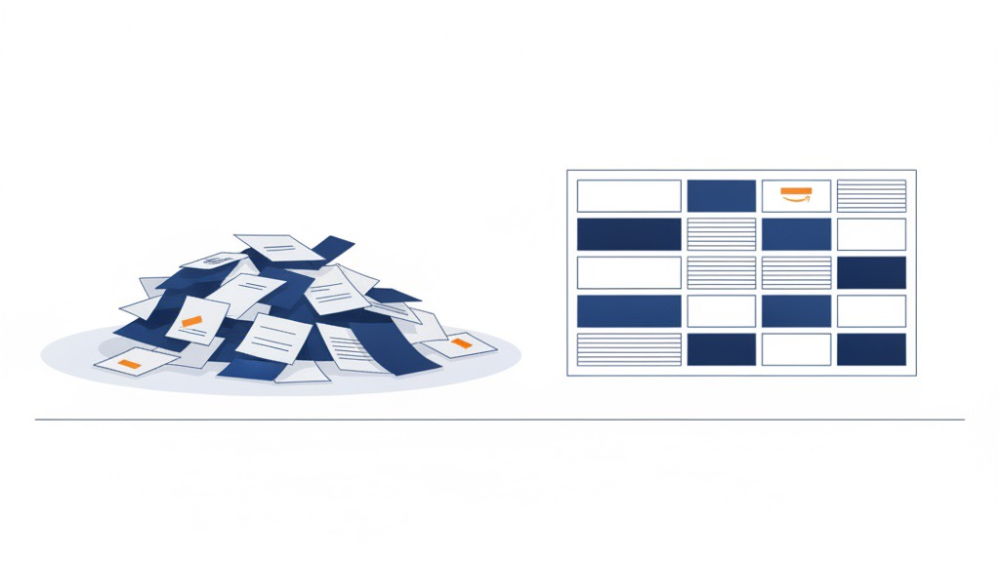

「整理整頓が苦手」だからこそ、
仕組みに逃がす
業務改善コラム ／ 仕組み化・自動化 ／ 読了目安：約8分
「いろいろ自動化してて、きっちりしてはりますね」と言われることがあって、そのたびに少し申し訳ない気持ちになります。笑
私、整理整頓がずっと苦手なんです。フォルダはぐちゃぐちゃやし、片付けも管理も得意じゃない。
根性で直すのを諦めて「仕組みに逃がす」と決めてから、ようやく回り始めました。この記事は、その「苦手やからこそ仕組みにする」という、ちょっと逆の話です。
1. 仕組み化が得意なのではなく、苦手から逃げた
すごいから仕組みにしてるんじゃないんです。放っておくと自分が必ず抜ける・忘れる・散らかす、というのが分かってるから、先に仕組みに預けてるだけ。攻めじゃなくて、守りの自動化です。
几帳面な人は、気合いと記憶である程度回せてしまう。だから逆に、仕組みにする動機が弱いんやと思います。
苦手な人間のほうが「このままやと事故る」という危機感が強いぶん、本気で作る。苦手は、仕組み化のいちばんの燃料です。
2. 「気をつける」で直らないものは、直さない
ミスをすると、つい「次から気をつけよう」と思います。でも「気をつける」で直るなら、とっくに直ってるはずで。
何度も同じところでつまずくなら、性格や根性の問題じゃなくて、仕組みが無いだけです。
だから私は、自分を直すのをやめました。「どうせやらかす前提」で、抜けを受け止めてくれる仕組みを作る。
人も責めない、自分も責めない、仕組みに肩代わりさせる。会社でも同じで、誰かの注意力だけに頼ってる作業は、いつか必ず落ちます。
「気をつける」をやめて、
「気をつけなくてもいい形」に変える。

3. 何を仕組みに逃がすか（昇格の合図）
とはいえ、何でもかんでも自動化すればいいとは思ってません。仕組みにするのも手間なので、逃がすものは選びます。私の合図はこの3つです。
- 同じ面倒が2回起きた：たまたまやない。繰り返すやつ、と判断します。
- 「もう一回やりたくない」と思った：この感情が出た瞬間が合図です。
- 自分の注意力だけが品質を支えている：自分が忘れたら破綻する作業は、危険信号です。
逆に、めったに起きないことや一回きりのことは、無理に仕組みにしません。苦手で・繰り返す・落ちると痛い。この3つが重なったものから順番に逃がしていきます。
4. 小さく逃がす：チェックリストから始める
「仕組み化」というと、いきなり立派なマニュアルやシステムを思い浮かべがちですが、最初からそれを作ると重くて続きません。うちは、いちばん小さい形から始めて、効いたら昇格させるやり方にしています。
まずは紙かメモのチェックリスト1枚で十分です。それで抜けが減ったら、よく使う文章はひな形にする、入力はフォームにする、と少しずつ形を上げていく。
最後に「自分がいなくても回る」「新しく入った人が迷わない」ところまで行けば完成です。最初から完璧なマニュアルを目指さないのが、続くコツやと思ってます。
補足：計算・検索・集計みたいな「速さと正確さ」で勝てる作業は、どんどん道具やAIに渡します。逆に、世界観をつくるデザインと、責任と価値観が乗る判断は、人が持つ。
この線引きは「仕組み化は、次の人への優しさ」に書いています。
5. まとめ：弱さは、仕組みの設計図になる
仕組み化は、きっちりした人の特権じゃないです。むしろ「自分はどうせ抜ける」と知ってる人ほど、強い仕組みを作れる。
自分の苦手な場所が、そのまま「ここに仕組みが要る」という設計図になるからです。
直らない弱さを根性で直そうとして消耗するより、弱さを認めて仕組みに逃がす。
そのほうがずっと楽で、ずっと続きます。「自分は管理が苦手で…」と思ってる人がいたら、それは仕組み化に向いてない理由じゃなくて、向いてる理由かもしれません。少なくとも私はそうでした。
「いつも自分が抜ける作業」を、仕組みに逃がしませんか
管理が苦手で、いつも同じところでつまずく。人に任せたいけど、任せ方が分からない。
同じことで困ってる人がいたら、「どの作業を逃がすか」を一緒に洗い出すところから話しましょう。